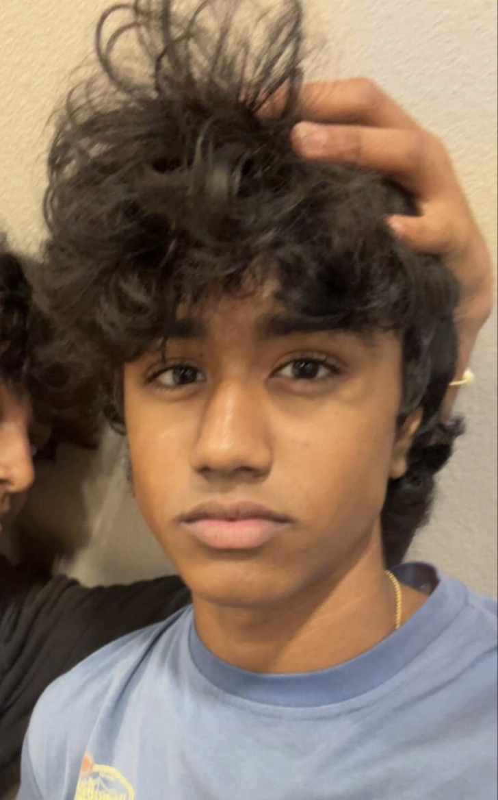
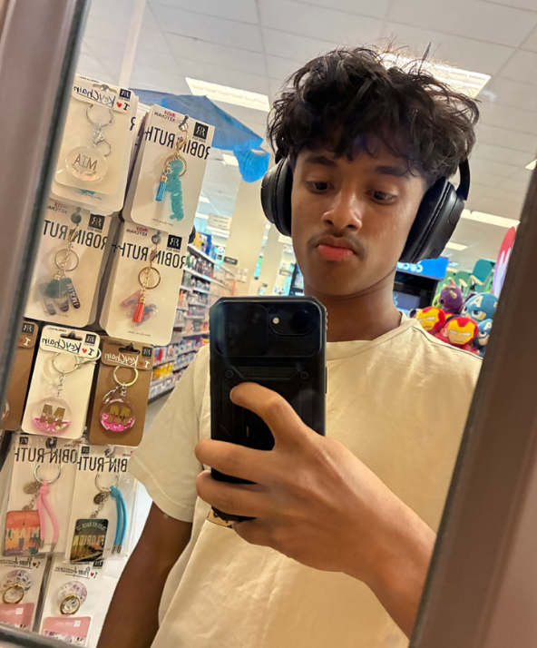

01
Interactive Workshops
Hands-on activities and guided discussions that make learning active, welcoming, and memorable.
Brain Science for Young Minds
NeuroReach is a student-led organization making brain science and emotional wellness engaging through hands-on lessons, workshops, and community education.
Our programs help young learners understand their emotions, build self-awareness, practice empathy, and discover how the brain shapes everyday life.
What students will discover
NeuroReach is a student-led organization dedicated to making brain science and emotional wellness approachable for young learners. We believe that understanding how the brain works can give students the language and confidence to better recognize their thoughts, feelings, habits, and relationships.
Through interactive lessons, hands-on activities, group discussions, and community workshops, we introduce topics such as brain anatomy, neurons, memory, sleep, emotional vocabulary, self-awareness, empathy, kindness, and healthy coping strategies. Each experience turns complex ideas into clear, age-appropriate learning activities.
Our goal is to create supportive learning environments where curiosity is welcomed, questions are encouraged, and conversations about emotional wellness feel normal. By connecting science with everyday life, NeuroReach helps students develop knowledge and practical skills they can carry into their homes, schools, and communities.
What We Do
We combine science, conversation, and hands-on learning to help young people better understand their minds and support one another.
01
Hands-on activities and guided discussions that make learning active, welcoming, and memorable.
02
Age-appropriate lessons exploring the brain, memory, sleep, emotions, and everyday behavior.
03
Approachable conversations that build emotional vocabulary, empathy, self-awareness, and healthy coping skills.
Our Program
Our program works to make mental health education more accessible, understandable, and welcoming for young people. Through interactive workshops, age-appropriate lessons, group discussions, and hands-on activities, we teach children about brain science, emotions, healthy communication, empathy, and practical coping skills. We aim to help students better understand what they are feeling, recognize when they may need support, and feel more comfortable talking about mental wellness with trusted adults and peers. By bringing these conversations into schools and community spaces, NeuroReach hopes to reduce the stigma surrounding mental health and encourage a culture of openness, kindness, and support. Our goal is to give young learners knowledge and practical tools that can strengthen their confidence, relationships, and overall emotional well-being.
01
Explore brain anatomy, neurons, memory, sleep, and how the brain helps shape everyday thoughts and actions.
02
Build emotional vocabulary, recognize different levels of emotion, and understand the connection between the mind and body.
03
Practice perspective-taking, reflection, curiosity, kindness, and thoughtful communication with others.
04
Create a personal coping toolkit and apply the program’s lessons at home, at school, and throughout the community.
Meet the Team
Our Leadership team consists of 6 High School students who are working togethor to combine education, techonology, communication, and community outreach to make brain science and mental-health awareness more understandable and accessible to young people

President
Leads the organization's vision, programs, and overall operations.
Vice President
Supports organizational planning, coordination, and leadership.
Head of Partnerships
Builds relationships with schools, organizations, and community partners.
Head of Digital Management
Manages NeuroReach's website, digital tools, and online resources.
Head of Curriculum
Develops and organizes engaging, age-appropriate educational lessons.

Social Media Manager
Shares NeuroReach's work, announcements, and educational content online.